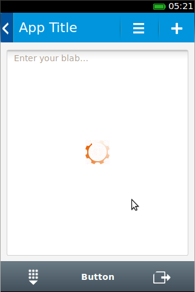

This post is written by Pierre Richard, Principal, CTO, Jaxo, Inc.
|  |
I know, by experience and practice, the importance of the first hours—or even the first minutes—spent discovering and learning new concepts. During this period, developers take their go/no-go decision, mostly based on the apparent complexity of what they see.
Once you gain expertise in a given domain, you have tendencies to forget the obvious, the basics, which is where the new developers (“newbies”) need the most help. Experts are focusing on topics largely irrelevant to newbies wanting to get the essentials. A Getting Started guide should never be written by an expert—it’s too late because they forgot what it’s was like to be a newbie. This chapter and fxosstub were written by a Firefox OS newbie. git clone -b gh-pages https://github.com/Jaxo/fxosstub |
I started from scratch studying Firefox OS about 2 weeks ago. The first minutes were frustrating, but my Jaxo, Inc., co-founder, Joe Latone, had me motivated. Having faced and understood many innovations in the past, I was confident. I knew that, in a few days or more, I would be able to overcome these difficulties, i.e., “developer ego.”
I enjoy and respect the Mozilla community. I thought that I could give my 2 pence to the Firefox OS community, while learning about their new work. So, I decided to gain profit of my inexperience in playing the Janus figure, keeping one of my faces as the newbie as long as I could, and then switching to the veteran face when needed. This is where the Firefox OS “Hello, World” sample, fxosstub, derives.
It is intended for people with minimum knowledge. You only need to know the following:
Here are some remarks I conscientiously jotted from the very first minutes I discovered Firefox OS:
adb-get install? Use Nightly? I wasted 1 day on this and so will finish later this +6-hours long build, if it is really necessary.I had written several apps on Google App Engine (GAE) and these should be good candidates to use to build an application for Firefox OS because they’re HTML5, they’re RESTful (through XMLHttpRequest, not JQuery), and they interface with Google APIs.
One of my GAE applications, Genetick, I decided to “install” on Firefox OS. How?
manifest.webapp in the war directory, but it needs fixes:
setInstallButton JS method, exported.Now, a newbie can start with the following test:
In my opinion, this makes it much more obvious to the newbie how Firefox OS deals with mobiles, and raises their enthusiasm!
Googling again, this newbie finds the Warsaw 2012 Mozilla Camp, as well as some other gems, patterns and custom elements, and gets frustrated again:
Where are all those icons the Camp advertised about? No place to go. The icons I dug up from the samples are of different sizes (30, 32, 40), different naming schemes, etc. Sigh!
The CSS3′s scripts are obscure. It seems that the styler added rules over a set of defined rules, some of them new just for nullifying previous ones—using role, type, id, classes—increasing the preferences or, worse, exploiting the order of rules as it happens to be implemented.
On the HTML side, there is no clear pattern giving life to the design concept, i.e., between nav, section, and menu. What HTML5 tag should I use?!
The veteran decided to provide the newbie with a working example of the design guide rules. No much to say, except that it was a tedious work to:
It began with the twittershare application, because it wasn’t the worst application regarding its look’ n feel (and structure, although it could have been better at terminology). It also was the one closer to a vanilla application, from a newbie point of view.
It ended 2 days later with ffoxstub, consisting of:
Then, as a newbie, I was able to adapt my GAE application—mentioned earlier—in the context of a Firefox OS mobile device. This step took 3 hours, starting from the stub. Now, a newbie can start to get more involved with Firefox OS and the community, trust the approaches, feel the power. Soon, the newbie will be an expert.
The most simplistic, minimalist pattern to get the most newbies started building an application for Firefox OS on mobile, and it must stay as such: no rings, no bells. The Ariadne’s string through the Labyrinth, just enough to wake up the enthusiasm of legions of developers. Those, one day or another, will evolve to the wonderful world of requireJS, Volo, and the rest, but not at the start. Target the widest audience first.
fxosstub does absolutely nothing, except to show a screen suitable for obtaining the familiar layout of a mobile application aujus Firefox: a top header—with an install button, a body section, a bottom toolbar—with normalized icons. In the body section, there is a text area—launching the virtual keyboard—and a progress bar. All of this is supposed to self-adapt to an adequate size, keeping the text readable, the buttons finger-reachable.
fxosstub fills the gap between:
Posted by Pierre Richard on at